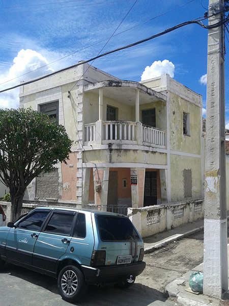
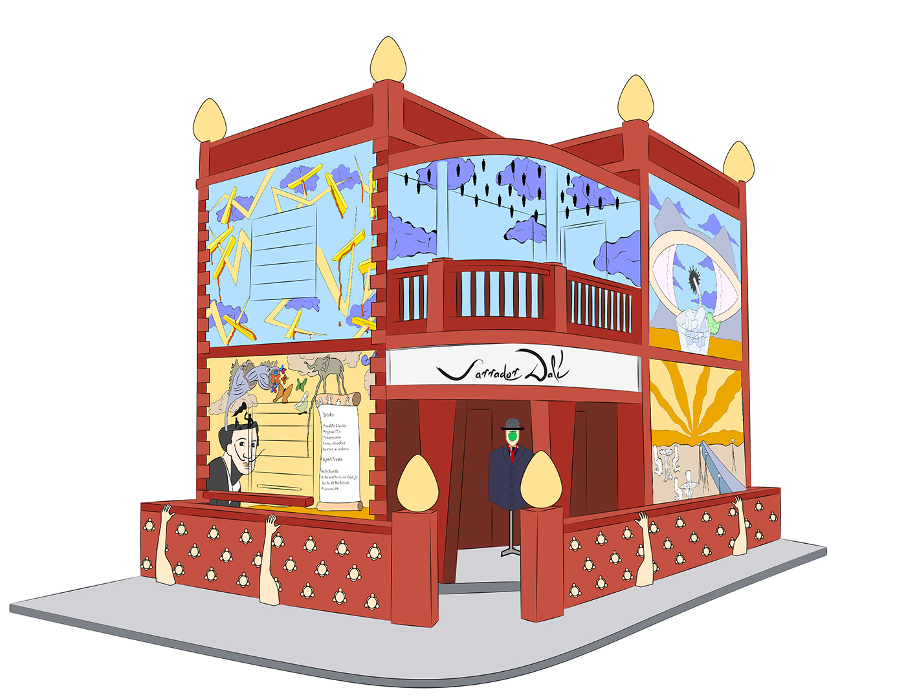
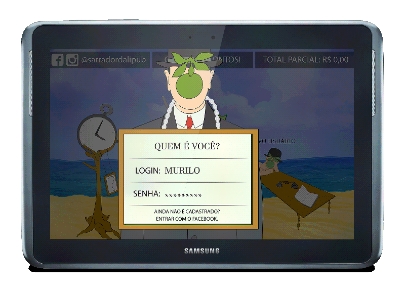
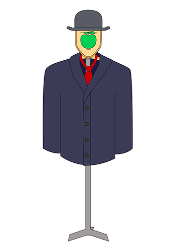

| Aluno | Curso | Semestre |
|---|---|---|
| Mateus Thayson | Design Digital | 2 |
| Pedro Italo | Design Digital | 2 |
| Ruan Rocha | Design Digital | 2 |
| Paulo Guilherme | Design Digital | 2 |
| Mateus Sousa | Design Digital | 2 |
Esse projeto foi concebido por alunos do primeiro semestre (2017.1) do curso de Design Digital na Universidade Federal do Ceará - Campus de Quixadá para o encerramento da disciplina de História da Arte. A idealização do Pub teve como base os princípios do movimento de arte Surrealismo, principalmente o automatismo psíquico e a crítica social. Focamos nos ideais defendidos por André Breton, René Magritte e Salvador Dalí.
Quixadá é uma cidade universitária localizada no sertão central do estado do Ceará, por esse motivo optamos por trabalhar com o público de faixa etária entre 18 e 35 anos (intervalo de idade de professores/alunos universitários). Escolhemos o local baseando-nos principalmente na proximidade dele com a praça José de Barros que é onde ocorre o embarque e o desembarque de alunos e professores todos os dias. O prédio pode ser visto na imagem abaixo. O nome, por sua vezes, foi escolhido levando em conta a cultura Popular da juventude da cidade, ele deriva da gíria Sarrada. Por isso: Sarrador Dalí.
A inspiração inicial para a decoração do Pub veio do Teatro-Museu Dalí que fica localizado na cidade de Figueres, Catalunha. No entanto, optamos por trabalhar com grandes painéis nas paredes inspirados em algumas obras do autores citados acima. Fizemos uso do automatismo psíquico para criá-los a partir dos temas: Violência, Sertão, Massificação, Monólitos e Juventude. O resultado pode ser vistoabaixo.
O logotipo e a fonte foram inspirados em uma das várias assinaturas de Salvador Dalí
Assinatura Salvador DalíTodos o componentes do cardápio foram desenvolvidos tendo como base as características do movimento e estão listados abaixo. O layout do cardápio em si foi inspirado no livro Nadja de André Breton. Para mais detalhes dos drinks e dos aperitivos acesse o link abaixo.
CardápioPara esse projeto idealizamos duas interfaces digitais: um tablet colocado dentro do cardápio físico onde seria instalado a aplicação do Pub e um micro computador ligado a uma tela simulando um rosto humano. A aplicação do tablet foi planejada para ter características de jogo onde é possível que cada cliente crie seu próprio personagem e faça com que ele interaja com o cenário. O login com diversos usuários permite que a conta seja calculada separadamente para cada um deles e muito mais. Já a segunda interface seria instalada em uma armação que simularia um ser humano e funcionaria como atendente virtual que interagiria com os clientes por voz e tiraria suas dúvidas sobre o Pub.
 